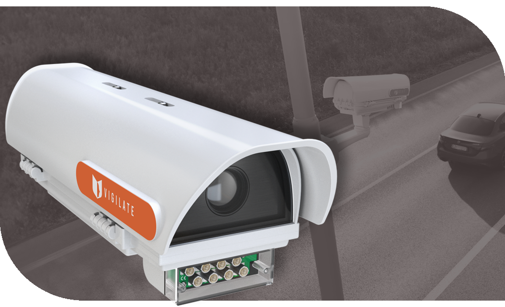

V-LANE TYPE A
A sophisticated CCV-type camera, designed to offer an unprecedented level of surveillance. This exceptional solution can accurately monitor up to five lanes of roadways, with coverage extending up to 50 meters away. However, its versatility goes far beyond basic features. Our camera sets a benchmark in the surveillance industry, as it can be customized to meet the specific needs of each customer. Every aspect, from the hardware to the installed optics, is completely modifiable, ensuring a solution perfectly tailored to the most complex contexts and varied situations. So, if you're looking for a camera that not only offers wide surveillance coverage but can also be adapted to perfectly fit your needs, our solution is the ideal choice. Revolutionizing the concept of surveillance camera, we offer technology that adapts to you, so you can achieve maximum effectiveness and security in every situation.

V-LANE TYPE B
Our camera tailored for highways. This advanced device has been developed to offer exceptional precision in data acquisition, including patterns, colors, plate numbers, and types of vehicles, even at variable speeds. However, its distinctive feature goes beyond the ability to detect fundamental details. This extraordinary device is designed for the challenging environment of highways, where precision and reliability are crucial. The camera can accurately capture key information even in conditions of heavy traffic and high-speed vehicle flows. This adaptability is crucial to ensure the safety and effective management of modern highways. But the real revolution lies in its main feature: wireless connectivity. In addition to being able to connect via traditional wiring, our camera can establish a reliable wireless connection.
V-COUNTER MANAGER INDOOR
An advanced device that combines the efficiency of state-of-the-art cameras with an intelligent processing engine, known as the "v-engine." This system represents a leap forward in security, adaptable for both small-sized buildings and complex structures. In addition to monitoring power, the system stands out for its advanced analysis capability, characterized by the recognition of three-dimensional shapes and objects. The versatility of this system is truly remarkable. Whether in small buildings or larger structures, the device can perfectly adapt to different needs. The cameras within the system not only capture details accurately, but the heart of this technology, the "v-engine," allows managing and synchronizing the collected information. This intelligent processing is essential for creating smooth and integrated surveillance. A crucial strength is the three-dimensional recognition capability, a feature that goes beyond simple image recognition.
V-COUNTER MANAGER OUTDOOR
Another surveillance device that harnesses the potential of multiple advanced cameras, united and orchestrated by the sophisticated processing engine, the "v-engine." This system represents another step forward in ensuring uncompromising surveillance, adaptable to various situations and environments. At the heart of this solution are Samsung's enterprise-grade outdoor cameras, experts in facing the challenges of the outdoor environment. These cameras have been designed to withstand the elements, precipitation, and adverse conditions, ensuring reliable performance in any weather conditions. This robustness is crucial when it comes to protecting buildings, areas, and outdoor spaces. In addition to their resilience, these cameras represent a combination of power and precision. Equipped with the ability to perform three-dimensional recognitions, they can capture and analyze details accurately, providing a more complete and comprehensive view of the monitored environment. Improved resolution, particularly for individual recognition, is a key element, ensuring that every detail is captured sharply and distinctly.
WHAT OUR EMPLOYEES DO?
(part performed by me as an intern)
At the heart of our laboratories, a team of talented employees dedicatedly assembles high-quality products with zeal and competence. This process is carried out with meticulous care, as we understand the importance of offering solutions that are perfectly aligned with the specific needs of our customers. Every step, every detail is carefully considered and implemented, ensuring that each product that comes out of our production lines is a standard of excellence in terms of functionality and customization. But our commitment does not stop here. Once assembled, the products undergo a rigorous testing process, both physically and digitally. This holistic approach to verifying product integrity ensures that every function, every feature is finely calibrated and ready to face the real challenges our customers will encounter. From data analysis to practical tests, each testing phase is aimed at ensuring impeccable and reliable performance. Our attention to quality also extends to packaging and shipping management. We recognize that a high-quality product deserves to be presented to the customer impeccably. Our employees diligently dedicate themselves to packaging each item with the utmost care, ensuring it is adequately protected to face the journey to the end customer. This reflects our commitment to customer satisfaction, ensuring that each product arrives in the best possible condition. In summary, our production process is imbued with attention, care, and dedication. Our laboratories are the point where craftsmanship and technology merge to create solutions that exceed expectations. From assembly to customization, from testing to packaging management, each phase of our process is guided by a passion for excellence and the delivery of products that can truly make a difference in the lives of our customers.


 +39 3922553422
+39 3922553422 vigilates_srl
vigilates_srl vigilates_srl
vigilates_srl{kind=link}